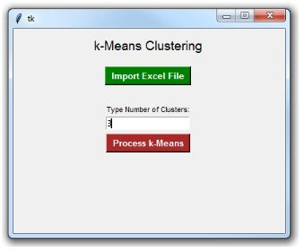

K-Means Clustering in Python¶
Pendahuluan :¶
Clustering pengelompokan sejumlah data atau obyek ke dalam cluster (group) sehingga dalam setiap cluster akan berisi data yang semirip mungkin. Dalam metode clustering ini berusaha untuk menempatkan obyek yang mirip (jaraknya dekat) dalam satu cluster. Dalam metode ini tidak diketahui sebelumnya berapa jumlah cluster dan bagaimana pengelompokanya (Santoso, 2007).
K-Means Clustering adalah konsep yang berada di bawah Pembelajaran Tanpa Pengawasan. Algoritma ini dapat digunakan untuk menemukan grup dalam data yang tidak berlabel. Untuk mendemonstrasikan konsep ini, saya akan meninjau contoh sederhana K-Means Clustering in Python.
Proses Clustering :
- Penentuan pusat Cluster Awal
- Perhitungan jarak dengan pusat cluster
- Pengelompokan data
- Penentuan pusat cluster baru
- Ulangi langkah ke tiga, jika cluster masih berubah.
Topik yang akan dibahas :
- Membuat DataFrame untuk kumpulan data dua dimensi
- Menemukan centroid untuk 3 cluster, dan kemudian untuk 4 cluster
- Menambahkan antarmuka pengguna grafis (GUI) untuk menampilkan hasilnya
Implementasi : Data To Fish¶
Anda kemudian dapat mengambil data ini dalam Python menggunakan panda DataFrame:
from pandas import DataFrame
Data = {'x': [25,34,22,27,33,33,31,22,35,34,67,54,57,43,50,57,59,52,65,47,49,48,35,33,44,45,38,43,51,46],
'y': [79,51,53,78,59,74,73,57,69,75,51,32,40,47,53,36,35,58,59,50,25,20,14,12,20,5,29,27,8,7]
}
df = DataFrame(Data,columns=['x','y'])
print (df)K-Means Clustering in Python – 3 clusters
Setelah membuat DataFrame berdasarkan data di atas, Anda harus mengimpor 2 modul Python tambahan:
-
matplotlib - untuk membuat grafik dengan Python
-
sklearn - untuk menerapkan K-Means Clustering dengan Python
Dalam kode di bawah ini, Anda dapat menentukan jumlah cluster. Untuk contoh ini, tetapkan 3 cluster sebagai berikut:
KMeans (n_clusters = 3) .fit (df)
from pandas import DataFrame
import matplotlib.pyplot as plt
from sklearn.cluster import KMeans
Data = {'x': [25,34,22,27,33,33,31,22,35,34,67,54,57,43,50,57,59,52,65,47,49,48,35,33,44,45,38,43,51,46],
'y': [79,51,53,78,59,74,73,57,69,75,51,32,40,47,53,36,35,58,59,50,25,20,14,12,20,5,29,27,8,7]
}
df = DataFrame(Data,columns=['x','y'])
kmeans = KMeans(n_clusters=3).fit(df)
centroids = kmeans.cluster_centers_
print(centroids)
plt.scatter(df['x'], df['y'], c= kmeans.labels_.astype(float), s=50, alpha=0.5)
plt.scatter(centroids[:, 0], centroids[:, 1], c='red', s=50)Jalankan kode dengan Python dan Anda akan melihat 3 cluster dengan 3 centroid berbeda:
Perhatikan bahwa pusat dari setiap kluster (berwarna merah) mewakili rata-rata semua pengamatan yang termasuk dalam kluster tersebut.
Seperti yang mungkin Anda lihat, pengamatan yang dimiliki oleh kluster tertentu lebih dekat ke pusat kluster itu, dibandingkan dengan pusat kluster lainnya.
K-Means Clustering in Python – 4 clusters
Sekarang mari kita lihat apa yang akan terjadi jika Anda menggunakan 4 cluster sebagai gantinya. Dalam hal ini, satu-satunya hal yang perlu Anda lakukan adalah mengubah n_clusters dari 3 menjadi 4:
KMeans (n_clusters = 4) .fit (df)
Jadi, kode Python lengkap Anda untuk 4 cluster akan terlihat seperti ini:
from pandas import DataFrame
import matplotlib.pyplot as plt
from sklearn.cluster import KMeans
Data = {'x': [25,34,22,27,33,33,31,22,35,34,67,54,57,43,50,57,59,52,65,47,49,48,35,33,44,45,38,43,51,46],
'y': [79,51,53,78,59,74,73,57,69,75,51,32,40,47,53,36,35,58,59,50,25,20,14,12,20,5,29,27,8,7]
}
df = DataFrame(Data,columns=['x','y'])
kmeans = KMeans(n_clusters=4).fit(df)
centroids = kmeans.cluster_centers_
print(centroids)
plt.scatter(df['x'], df['y'], c= kmeans.labels_.astype(float), s=50, alpha=0.5)
plt.scatter(centroids[:, 0], centroids[:, 1], c='red', s=50)Jalankan kodenya, dan sekarang Anda akan melihat 4 cluster dengan 4 centroid berbeda:
Tkinter GUI to Display the Results
Anda dapat menggunakan modul tkinter dengan Python untuk menampilkan kluster pada antarmuka pengguna grafis sederhana.
Ini adalah kode yang dapat Anda gunakan (untuk 3 cluster):
from pandas import DataFrame
import matplotlib.pyplot as plt
from sklearn.cluster import KMeans
import tkinter as tk
from matplotlib.backends.backend_tkagg import FigureCanvasTkAgg
Data = {'x': [25,34,22,27,33,33,31,22,35,34,67,54,57,43,50,57,59,52,65,47,49,48,35,33,44,45,38,43,51,46],
'y': [79,51,53,78,59,74,73,57,69,75,51,32,40,47,53,36,35,58,59,50,25,20,14,12,20,5,29,27,8,7]
}
df = DataFrame(Data,columns=['x','y'])
kmeans = KMeans(n_clusters=3).fit(df)
centroids = kmeans.cluster_centers_
root= tk.Tk()
canvas1 = tk.Canvas(root, width = 100, height = 100)
canvas1.pack()
label1 = tk.Label(root, text=centroids, justify = 'center')
canvas1.create_window(70, 50, window=label1)
figure1 = plt.Figure(figsize=(5,4), dpi=100)
ax1 = figure1.add_subplot(111)
ax1.scatter(df['x'], df['y'], c= kmeans.labels_.astype(float), s=50, alpha=0.5)
ax1.scatter(centroids[:, 0], centroids[:, 1], c='red', s=50)
scatter1 = FigureCanvasTkAgg(figure1, root)
scatter1.get_tk_widget().pack(side=tk.LEFT, fill=tk.BOTH)
root.mainloop()Dan inilah yang akan Anda dapatkan ketika menjalankan kode dengan Python:

More Advanced Tkinter GUI
Di bagian akhir tutorial ini, saya akan membagikan kode untuk membuat GUI tkinter yang lebih maju yang memungkinkan Anda untuk:
-
Mengimpor file Excel dengan kumpulan data dua dimensi
-
Ketik jumlah cluster yang dibutuhkan
-
Tampilkan cluster dan centroid
Ini kode Python lengkap:
import tkinter as tk
from tkinter import filedialog
import pandas as pd
from pandas import DataFrame
import matplotlib.pyplot as plt
from sklearn.cluster import KMeans
from matplotlib.backends.backend_tkagg import FigureCanvasTkAgg
root= tk.Tk()
canvas1 = tk.Canvas(root, width = 400, height = 300, relief = 'raised')
canvas1.pack()
label1 = tk.Label(root, text='k-Means Clustering')
label1.config(font=('helvetica', 14))
canvas1.create_window(200, 25, window=label1)
label2 = tk.Label(root, text='Type Number of Clusters:')
label2.config(font=('helvetica', 8))
canvas1.create_window(200, 120, window=label2)
entry1 = tk.Entry (root)
canvas1.create_window(200, 140, window=entry1)
def getExcel ():
global df
import_file_path = filedialog.askopenfilename()
read_file = pd.read_excel (import_file_path)
df = DataFrame(read_file,columns=['x','y'])
browseButtonExcel = tk.Button(text=" Import Excel File ", command=getExcel, bg='green', fg='white', font=('helvetica', 10, 'bold'))
canvas1.create_window(200, 70, window=browseButtonExcel)
def getKMeans ():
global df
global numberOfClusters
numberOfClusters = int(entry1.get())
kmeans = KMeans(n_clusters=numberOfClusters).fit(df)
centroids = kmeans.cluster_centers_
label3 = tk.Label(root, text= centroids)
canvas1.create_window(200, 250, window=label3)
figure1 = plt.Figure(figsize=(4,3), dpi=100)
ax1 = figure1.add_subplot(111)
ax1.scatter(df['x'], df['y'], c= kmeans.labels_.astype(float), s=50, alpha=0.5)
ax1.scatter(centroids[:, 0], centroids[:, 1], c='red', s=50)
scatter1 = FigureCanvasTkAgg(figure1, root)
scatter1.get_tk_widget().pack(side=tk.RIGHT, fill=tk.BOTH)
processButton = tk.Button(text=' Process k-Means ', command=getKMeans, bg='brown', fg='white', font=('helvetica', 10, 'bold'))
canvas1.create_window(200, 170, window=processButton)
root.mainloop()Lalu, jalankan kode Python, dan Anda akan melihat GUI berikut:
Tekan tombol hijau untuk mengimpor file Excel Anda (kotak dialog akan terbuka untuk membantu Anda menemukan dan kemudian mengimpor file Excel Anda).
Setelah Anda mengimpor file Excel, ketikkan jumlah cluster di kotak entri, dan kemudian klik tombol merah untuk memproses k-Means. Misalnya, saya mengetik 3 di dalam kotak entri:

Dan inilah hasil yang saya dapatkan:

Itu dia. Anda dapat mempelajari lebih lanjut tentang penerapan K-Means Clusters in Python dengan mengunjungi dokumentasi sklearn.